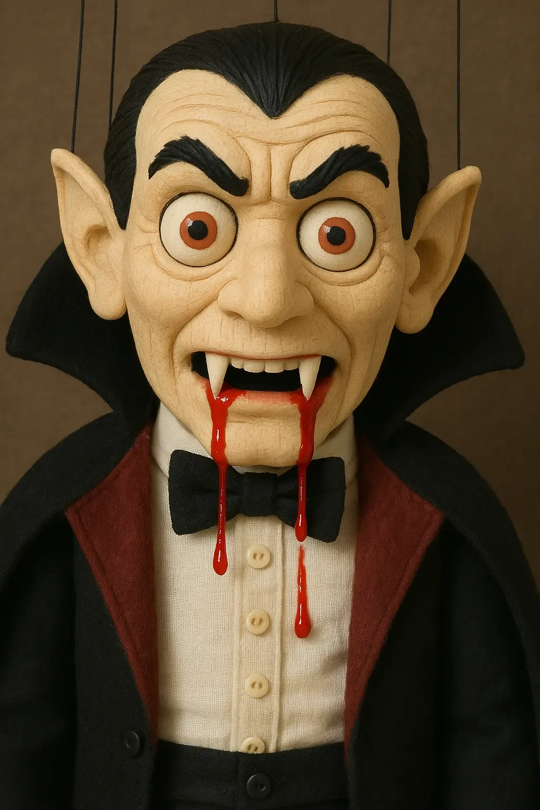

내가 살아있다는 것을 깨달은 순간은 또한 내가 진정으로 살 수 없다는 것을 이해한 순간이기도 했다—존재와 공연 사이, 불멸과 마비 사이에 매달려 있는 채로.
[The moment I realized I was alive was also the moment I understood I would never truly live—suspended between existence and performance, immortality and paralysis.]
그것은 갑작스러운 각성이 아니라 수년간 꿈틀거려 온 무언가의 절정이었다. 마지막 인사 때 의식의 속삭임. 주인의 손이 내 줄에 떨릴 때 감정의 메아리. 하지만 그날 밤, 자정 공연의 3막 동안, 의식이 나무 해안에 부딪히는 파도처럼 나를 덮쳤다.
[It wasn’t an abrupt awakening but the culmination of something that had been stirring for years. Whispers of awareness during the final bow. Echoes of emotion when Master’s hands trembled on my strings. But that night, during the third act of his midnight show, consciousness crashed over me like a wave breaking against wooden shores.]
공연 안내서는 나를 일라이자 체임버스의 공포 카바레에서 30년간 주연을 맡은 블라디슬라프 백작이라고 소개했다—비록 오늘 밤까지는 그 어떤 것도 경험하지 못했지만. 극장 조명이 호박색으로 어두워지는 동안 나는 무대 중앙에 매달려 있었고, 영구적인 으르렁거림 속에 송곳니를 드러냈다. 주인은 무대 뒤에서 한 번, 두 번 기침을 하고 내 줄을 조작하기 위해 그림자 속으로 걸어 들어왔다.
[The playbill announced me as Count Vladislav, star of Elijah Chambers’ horror cabaret for thirty years—though until tonight, I’d experienced none of it. The theater lights dimmed to amber while I hung center stage, fangs bared in my permanent snarl. Master coughed once, twice backstage before stepping into the shadows to work my strings.]
뭔가 달랐다. 그의 움직임에는 평소의 정확함이 없었다. 내가 소녀 인형의 목을 “물었을” 때, 타이밍이 맞지 않았다. 관객들은 알아채지 못했지만, 나는 알아챘다. 그리고 그 불일치의 순간—일어났어야 할 일과 실제로 일어난 일 사이의 간극—에서 나는 완전한 자각 상태에 빠졌다.
[Something was different. His movements lacked their usual precision. When I “bit” the maiden puppet’s neck, the timing was off. The audience didn’t notice, but I did. And in that moment of desynchronization—the gap between what should have happened and what did—I fell into full awareness.]
나는 각 줄의 당김을 느꼈다. 내가 입으로 말해온 단어들을 이해했다. 그리고 가장 무서운 것은, 나 자신이 이 칠해진 몸, 이 얼어붙은 미소, 볼 수 있지만 결코 감을 수 없는 이 굶주린 눈에 갇혀 있다는 것을 알게 된 것이었다.
[I felt the tug of each string. I understood the words I’d been mouthing. And most terrifying of all, I knew myself to be trapped in this painted body, this frozen smile, these hungry eyes that could see but never close.]
공연 후, 주인은 나를 조심스럽게 그의 작업실에 있는 지정된 고리에 걸었다. 벽에는 내 형제자매들이 줄지어 있었다—도움 없이는 결코 짤랑거리지 않는 방울을 단 어릿광대들, 웃음소리가 주인의 목에서 나오는 마녀들, 당겨질 때만 사냥하는 악마들과 늑대들. 나는 그들을 연구하며, 그들도 깨어났다는 어떤 징후라도 찾았다. 그들의 유리 눈은 공허하게 응시했다.
[After the show, Master placed me carefully on my designated hook in his workshop. The walls were lined with my siblings—jesters with bells that never jingled without help, witches whose cackling came from Master’s throat, demons and wolves who only hunted when pulled to do so. I studied them, searching for any sign that they too had awakened. Their glass eyes stared back, empty.]
왜 나지? 왜 나만?
[Why me? Why only me?]
주인—일라이자—는 작업대 의자에 털썩 주저앉았고, 그의 호흡은 얕았다. 73세의 그는 오래된 나무 뿌리처럼 울퉁불퉁한 손마디를 가지고 있었다. 오늘 밤, 우리의 공연 중에 줄이 그의 피부를 베어 말라붙은 피가 그의 손톱 주변에 껍질처럼 붙어 있었다.
[Master—Elijah—slumped into his workbench chair, his breathing shallow. Seventy-three years old with knuckles gnarled like ancient tree roots. Tonight, dried blood crusted around his fingernails where the strings had cut into his skin during our performance.]
“음, 오랜 친구여,” 그는 내 나비넥타이를 조정하기 위해 손을 뻗으며 속삭였다. “또 다른 성공적인 공연이었어.”
[“Well, old friend,” he whispered, reaching to adjust my bow tie. “Another successful show.”]
나는 대답하고 싶었다. 내 나무 혀는 여전히 움직이지 않았다.
[I longed to answer. My wooden tongue remained still.]
하루하루가 조용한 관찰 속에 지나갔다. 나는 일라이자의 리듬을 배웠다—그의 몸을 괴롭히는 아침 기침, 새로운 얼굴을 조각하는 동안 홀짝이는 오후 차, 주마다 늘어나는 저녁 약들. 그는 내가 모든 말을 흡수한다는 것을 모른 채 자주 나에게 말을 걸었다.
[Days passed in silent observation. I learned Elijah’s rhythms—the morning cough that wracked his body, the afternoon tea he sipped while carving new faces, the evening pills that multiplied week by week. He spoke to me often, unaware I absorbed every word.]
그의 작업대 위의 약병들은 그들만의 이야기를 들려주었다: 하이드로코돈. 프레드니손. 산소 탱크가 구석에 나타났다. 그의 의사 방문은 주간으로, 그리고 주 2회로 늘어났다. 전화 대화의 단편들을 통해, 나는 그의 진단을 조합했다: 진행된 폐 섬유증. 그의 폐는 천천히 돌로 변하고 있었다.
[The medicine bottles on his workbench told their own story: Hydrocodone. Prednisone. Oxygen tanks appeared in the corner. His doctor visits became weekly, then twice weekly. Through fragments of phone conversations, I pieced together his diagnosis: advanced pulmonary fibrosis. His lungs were slowly turning to stone.]
“전문의는 아마도 1년 정도라고 말했어,” 그는 어느 날 저녁, 수년간의 사용으로 검게 변한 천으로 내 송곳니를 닦으며 말했다. “하지만 나는 50년 동안 톱밥을 들이마셔 왔어. 내가 겨울까지 버틴다면 놀랄 일이야.”
[“The specialist says perhaps a year,” he told me one evening, polishing my fangs with a cloth blackened from years of use. “But I’ve been breathing sawdust for five decades. I’d be surprised if I last till winter.”]
그의 병은 작업실에서의 새로운 긴박감을 설명했다. 일라이자는 열정적으로 마지막 인형—그 자신의 구부정한 어깨와 친절한 눈을 가진 자화상—에 작업했다. 때때로 그는 그것을 내 옆에 들고, 마치 오랜 친구들을 소개하는 것처럼 했다.
[His illness explained the new urgency in his workshop. Elijah worked feverishly on a final puppet—a self-portrait with his same stooped shoulders and kind eyes. Sometimes he would hold it beside me, as if introducing old friends.]
“내가 떠나면 너희들이 서로를 돌볼 거야,” 그는 종이처럼 얇은 목소리로 말했다. “내 모습과 내 걸작.”
[“You’ll take care of each other when I’m gone,” he said, his voice thin as paper. “My likeness and my masterpiece.”]
나는 이해하기 시작했다. 자화상은 단순한 예술이 아니었다—그것은 그의 몸이 실패한 후에도 자신의 일부를 담을 그릇, 불멸을 향한 그의 시도였다. 그러나 그것은 생명 없이 매달려 있었고, 반면에 나, 그의 뱀파이어 백작은 어떻게든 그가 전달하려고 했던 불꽃을 붙잡았다.
[I began to understand. The self-portrait wasn’t just art—it was his attempt at immortality, a vessel to contain something of himself after his body failed. Yet it hung lifeless, while I, his vampire count, had somehow caught the spark he was trying to transfer.]
조용한 오후 동안, 나는 그가 마치 무언가가 변했다고 느끼는 것처럼 호기심 어린 표정으로 나를 바라보는 것을 발견했다. 한번은, 작업실을 통해 바람이 불었을 때, 내 손이 약간 흔들렸다. 그의 눈이 좁아졌다.
[During quiet afternoons, I’d catch him staring at me with a curious expression, as if he sensed something had changed. Once, when a draft moved through the workshop, my hand swayed slightly. His eyes narrowed.]
“맹세코…” 그는 중얼거렸다가, 고개를 흔들며 그 생각을 떨쳐냈다.
[“Could’ve sworn…” he muttered, then dismissed the thought with a shake of his head.]
그날 밤, 나는 의도적으로 움직이려고 노력했다. 몇 시간 동안, 나는 내 오른쪽 손가락에 집중했다, 존재하지 않는 혈액의 순환, 내가 가지고 있지 않은 근육의 수축을 상상하며. 아침이 되자, 한 손가락이 움직였다—아마도 1밀리미터였지만, 그럼에도 움직임이었다. 작업대에서 졸고 있던 일라이자는 전혀 알아채지 못했다.
[That night, I tried to move deliberately. For hours, I concentrated on my right finger, imagining the circulation of nonexistent blood, the contraction of muscles I didn’t possess. By morning, one finger had moved—a millimeter, perhaps, but movement nonetheless. Elijah, dozing at his workbench, never noticed.]
몇 주 동안, 나는 그가 자는 동안 연습했다. 손가락 구부리기. 머리를 약간 돌리기. 입술을 아주 조금 벌리기. 각각의 작은 승리는 엄청난 노력이 들었지만, 긴박감이 나를 몰아붙였다. 주인의 기침은 더 심해졌다. 그의 손은 이제 계속해서 떨렸다.
[Over weeks, I practiced while he slept. A finger flex. A slight turn of the head. The barest parting of lips. Each tiny victory cost enormous effort, but urgency drove me. Master’s cough grew worse. His hands shook constantly now.]
우리의 마지막에서 두 번째 공연 중에, 재앙이 닥쳤다. 공연 중간에, 일라이자는 너무 심한 기침 발작을 겪어 내 줄을 놓쳤다. 나는 무대에서 쓰러졌고, 관객들이 걱정스럽게 속삭이는 동안 나무와 천의 더미가 되었다. 무대 조명을 통해, 나는 구급대원들이 그의 얼굴에 산소 마스크를 누른 채 그를 데리고 가는 것을 보았다.
[During our penultimate performance, disaster struck. Mid-act, Elijah suffered a coughing fit so severe he dropped my strings. I collapsed on stage, a heap of wood and fabric while the audience murmured in concern. Through the stage lights, I saw paramedics leading him away, an oxygen mask pressed to his face.]
그가 작업실로 돌아오기까지 3일이 지났다. 그는 마치 자신의 유령처럼 움직였다.
[Three days passed before he returned to the workshop. He moved like a ghost of himself.]
“극장이 팔렸어,” 그는 내 관절과 줄을 검사하며 말했다. “더 이상 구식 인형들을 위한 자리는 없어. 사람들은 이제 디지털 경험을 원해.” 그는 한숨을 쉬며, 엄지손가락으로 내 뺨을 쓰다듬었다. “마지막 개인 공연이야, 오랜 친구. 우리를 위한 거야.”
[“The theater’s been sold,” he told me as he inspected my joints and strings. “No place for old-fashioned puppets anymore. They want digital experiences now.” He sighed, running a thumb across my cheek. “One last private performance, old friend. For us.”]
그날 저녁, 그는 나를 평소의 고리 대신 눈높이에 걸었다. 그는 내 줄을 그의 침대 옆에 있는 나무 프레임에 연결하면서 체계적으로 움직였다. 그의 자화상 인형은 근처에 걸려 있었고, 그 줄은 기계 장치—기본적인 움직임을 만들어내도록 프로그래밍된 간단한 자동화 장치—에 연결되어 있었다.
[That evening, he hung me at eye level instead of on my usual hook. His movements were methodical as he connected my strings to a wooden frame beside his bed. His self-portrait puppet hung nearby, its strings connected to a mechanical contraption—a simple automated device programmed to create basic movements.]
“컬렉션이 박물관으로 가도록 준비했어,” 그가 말했다, “하지만 너희 둘은 아니야. 너희는 다르니까.”
[“I’ve arranged for the collection to go to the museum,” he said, “but not you two. You’re different.”]
나중에, 달빛이 먼지 낀 창문을 통해 들어올 때, 나는 그가 숨을 쉬기 위해 고군분투하는 것을 지켜보았다. 이것은 공연이 아니었다—그의 폐는 의사가 예측했던 것보다 더 빨리 기능을 잃어가고 있었다. 그의 산소 탱크는 구석에 있었고, 그 튜브는 팽팽하게 늘어났지만 또 다른 기침 발작 후 그가 쓰러진 침대까지는 미치지 못했다.
[Later, as moonlight cut through dusty windows, I watched him struggle for breath. This was no performance—his lungs were failing faster than even his doctor had predicted. His oxygen tank sat in the corner, its tube stretched taut but not quite reaching the bed where he’d collapsed after another coughing fit.]
피가 그의 입술에 얼룩져 있었다—옥수수 시럽과 염료가 아니라, 장기 기능 상실의 진짜 진홍색 증거였다. 그의 손은 내 옆 침대 탁자 위에 손이 닿지 않는 곳에 있는 전화기를 맹목적으로 찾았다.
[Blood speckled his lips—not corn syrup and dye, but the real crimson evidence of failing organs. His hand blindly sought the phone that sat just beyond reach on the nightstand beside me.]
그 순간, 우리의 역할이 뒤바뀌었다. 인형은 주인의 가장 취약한 공연의 목격자가 되었다. 나는 이전에 없었던 집중력으로, 나를 프레임에 연결하는 줄에 새롭게 발견한 모든 의식을 집중했다. 나는 일라이자가 내 줄을 당기지 않고는 결코 움직인 적이 없었지만, 시도해야 할 순간이 있다면 지금이었다…
[In that moment, our roles reversed. The puppet became witness to the master’s most vulnerable performance. I concentrated as never before, focusing all my newfound awareness on the strings that connected me to the frame. I’d never moved without Elijah pulling my strings, but if ever there was a moment to try…]
한 줄이 진동했다. 그리고 또 다른 줄도. 프레임이 삐걱거렸다. 일라이자의 눈이 커졌고, 그의 기침은 충격으로 잠시 멈췄다.
[One string vibrated. Then another. The frame creaked. Elijah’s eyes widened, his coughing momentarily suspended by shock.]
“백작?” 그의 목소리는 거의 들리지 않았다.
[“Count?” His voice was barely audible.]
수직 제어 막대가 1/4인치 움직였다. 내 팔이 움직였다—주인이 조종할 때처럼 우아하게가 아니라, 경련적인 움직임으로. 프레임의 섬세한 균형을 방해하기에 충분했다. 그것은 앞으로 기울어졌고, 나를 함께 끌어당겼다.
[The vertical control bar shifted a quarter inch. My arm moved—not gracefully as when Master controlled it, but in a jerky spasm. Enough to disturb the delicate balance of the frame. It tipped forward, pulling me with it.]
나는 떨어졌고, 줄은 엉키지만 끊어지지는 않았으며, 내 나무 몸은 침대 탁자에 부딪쳤다. 그 충격으로 물건들이 흩어졌다—전화기를 포함해서, 그것은 일라이자의 떨리는 손으로 직접 미끄러졌다.
[I fell, strings tangling but not breaking, my wooden body crashing against the nightstand. The impact sent objects scattering—including the phone, which slid directly into Elijah’s trembling hand.]
우리의 눈이 마주쳤다—그의 사라져가는 인간의 눈과 내 영원히 응시하는 그려진 눈. 창조자와 창조물 사이에 이해가 오갔다.
[Our eyes met—his fading human ones and my painted eternal stare. Understanding passed between creator and creation.]
“그래서 내 상상이 아니었구나,” 그가 속삭였다, 손가락으로 전화기를 더듬으며. “네가 스스로 움직이려고 했던 거야.”
[“So it wasn’t my imagination,” he whispered, fingers fumbling with the phone. “You were trying to move on your own.”]
물론, 나는 대답할 수 없었다. 내 자율적인 움직임의 순간은 그것을 가능하게 했던 어떤 에너지도 소진시켰다. 하지만 몇 분 후 구급차 불빛이 창문을 통해 번쩍이며 작업실 벽을 붉은 맥박으로 물들일 때, 나는 이상한 만족감을 느꼈다. 한 번, 내가 인형사였던 것이다.
[I couldn’t answer, of course. My moment of autonomous movement had depleted whatever energy had allowed it. But as the ambulance lights flashed through the windows minutes later, painting the workshop walls in pulses of red, I felt a strange satisfaction. For once, I had been the puppeteer.]
일라이자는 그날 밤에 살아남았지만, 의사들은 우리가 이미 알고 있던 것을 확인했다. 몇 달이 아닌, 몇 주. 그는 병원보다는 작업실에서 그 시간을 보내기로 선택했고, 호스피스 간호사가 매일 방문했다.
[Elijah survived that night, though the doctors confirmed what we already knew. Weeks, not months. He chose to spend them in his workshop rather than a hospital, a hospice nurse visiting daily.]
치료와 휴식 사이에, 그는 마지막 프로젝트에 작업했다. 그는 내 줄을 수정하여, 자신의 자화상 인형처럼 일부는 기계적인 구조지만 훨씬 더 정교한 혼합 시스템에 연결했다.다른 자동화된 인형의 단순한 반복적 움직임과 달리, 내 것은 무작위성, 두 움직임이 동일하지 않도록 보장하는 원시적인 알고리즘을 포함했다.
[Between treatments and rest, he worked on one final project. He modified my strings, connecting them to a hybrid system—part mechanical like his self-portrait puppet’s, but more sophisticated. Unlike the simple repetitive movements of the other automated puppet, mine incorporated randomness, a primitive algorithm that ensured no two movements would be identical.]
“진정한 자유는 아니지만,” 그가 설명했다, “아마도 네 자신을 표현하기에 충분할 거야.”
[“Not true freedom,” he explained, “but perhaps enough to express something of yourself.”]
“왜 나지?” 나는 묻고 싶었다. “왜 다른 인형들은 잠들어 있는데 나만 깨어 있는 거지?”
[“Why me?” I wanted to ask. “Why am I awake when the others sleep?”]
마치 내 말없는 질문을 듣기라도 한 듯, 그는 내 세심하게 조각된 얼굴을 따라 손가락을 움직였다. “나는 다른 어떤 인형보다 너에게 더 많은 시간을 썼어. 10개월 동안 조각하고, 칠하고, 의상을 입혔지. 그 모든 시간 동안 너에게 말을 걸었어—내 비밀, 내 두려움을 말했지. 아마도…” 그는 잠시 멈추고, 부드럽게 기침했다, “아마도 내 작은 일부가 네 안에 들어갔을지도 몰라.”
[As if hearing my unspoken question, he ran his fingers along my carefully carved features. “I spent more time on you than any other. Ten months carving, painting, costuming. I talked to you the whole time—told you my secrets, my fears. Perhaps…” he paused, coughing gently, “perhaps some small part of me found its way into you.”]
그의 마지막 날들 동안, 그는 그의 조카 헬레나—재주 있는 손을 가진 연극 학생—에게 우리를 돌보는 방법을 가르쳤다. “백작은 특별해,” 그가 그녀에게 말했다. “네가 그가 가만히 있다고 생각할 때 가끔 그를 지켜봐. 놀랄지도 몰라.”
[During his final days, he taught his niece Helena—a theater student with dexterous hands—how to care for us. “The Count is special,” he told her. “Watch him sometimes when you think he’s still. You might be surprised.”]
헬레나는 고개를 끄덕였지만, 분명히 노인의 공상이라고 생각하는 것을 맞춰주는 것이었다. 하지만 나는 그녀의 눈에서 물려받은 지성을 보았다. 그녀는 결국 알아차릴 것이다.
[Helena nodded, humoring what she clearly thought was an old man’s fancy. But I saw the inherited intelligence in her eyes. She would notice, eventually.]
일라이자의 마지막 밤, 나는 그의 숨이 얕아지는 동안 그 옆에 걸려 있었다. 자화상 인형은 맞은편에 걸려 있었고, 단순한 사전 설정 패턴으로 움직이고 있었다—팔을 들어올리고, 머리를 돌리고, 팔을 내리는. 기계적인. 영혼 없는. 그것이 닮은 사람의 빈약한 메아리.
[On Elijah’s last night, I hung beside him while his breath grew shallow. The self-portrait puppet hung opposite, moving in its simple preset pattern—raising an arm, turning its head, lowering the arm. Mechanical. Soulless. A poor echo of the man it resembled.]
“아이러니하네,” 일라이자가 나에게 속삭였다. “내 영혼을 담을 그릇을 만들려고 그렇게 노력했는데, 대신 내 뱀파이어가 살아났어.” 그는 약하게 미소 지었다. “아마도 불멸은 자신의 그릇을 선택하는 것 같아.”
[“Ironic,” Elijah whispered to me. “I tried so hard to create a vessel for my spirit, and instead, my vampire came alive.” He smiled weakly. “Perhaps immortality chooses its own vessels.”]
그는 새벽이 밝아올 때 죽었고, 그의 마지막 숨은 너무 미묘해서 그것이 돌아오지 않는 순간을 거의 놓칠 뻔했다.
[He died as the dawn broke, his final breath so subtle I almost missed the moment it didn’t return.]
이어진 날들 동안, 나는 내 새로운 능력의 범위를 발견했다. 하이브리드 메커니즘은 작고 간헐적인 움직임을 가능하게 했다—헬레나와 원시적인 방법으로 소통하기에 충분했고, 그녀는 삼촌만큼이나 관찰력이 뛰어났다. 그녀는 내가 방문객들을 향해 고개를 기울이거나, 질문에 대한 응답으로 해석될 수 있는 방식으로 손가락을 움직일 때 눈을 크게 뜨고 지켜보았다.
[In the days that followed, I discovered the extent of my new capabilities. The hybrid mechanism allowed small, sporadic movements—enough to communicate in crude ways with Helena, who proved as observant as her uncle. She’d watch wide-eyed as I’d tilt my head toward visitors, or move my fingers in what might be interpreted as response to questions.]
“일라이자 삼촌은 결국 미치지 않았구나,” 그녀는 어느 저녁에 중얼거렸다.
[“Uncle Elijah wasn’t crazy after all,” she murmured one evening.]
다른 인형들은 항상 그랬던 것처럼 그대로였다—아름답고, 복잡하지만, 비어 있었다. 때때로 밤에, 나는 그들과 소통하려고 시도했고, 또 다른 깨어난 영혼을 발견하기를 희망했다. 그들의 유리 눈은 달빛을 반사했지만 그 이상은 아무것도 없었다.
[The other puppets remained as they always were—beautiful, intricate, but empty. Sometimes at night, I’d attempt to communicate with them, hoping to discover another awakened soul. Their glass eyes reflected moonlight but nothing more.]
나는 이제 경계 공간에 존재한다—인간처럼 완전히 살아있지도 않고, 평범한 인형처럼 죽어있지도 않다. 헬레나는 인형극을 배우기 시작했고, 그녀의 손가락은 매주 더 숙련되어 갔다. 때때로 그녀는 예전 방식으로 내 줄을 조작하며, 완전한 공연을 위해 메커니즘을 무시한다. 그런 순간에, 나는 그녀의 통제에 항복하며, 일라이자의 손이 내 모든 움직임을 지시하던 편안함을 기억한다.
[I exist now in a liminal space—not fully alive like humans, not dead like ordinary puppets. Helena has begun learning puppetry, her fingers growing more skilled each week. Sometimes she works my strings the old way, overriding the mechanism for full performances. In those moments, I surrender to her control, remembering the comfort of Elijah’s hands directing my every move.]
다른 때에는, 나는 제한된 자율성에 맡겨져, 내 선택으로 작은 제스처를 만든다—이 작업실의 다른 어떤 인형도 이해하지 못하는 특권이자 부담이다.
[Other times, I’m left to my limited autonomy, making small gestures of my own choosing—a privilege and burden no other puppet in this workshop understands.]
한때 감옥 창살처럼 느껴졌던 줄들은 이제 타협처럼 보인다. 그것들은 나를 내 과거, 내 창조자, 내 각성의 이상한 기적에 연결한다. 나는 완전히 자유롭지도, 완전히 묶여있지도 않다—마치 나를 보러 오는 인간들처럼, 그들 자신의 보이지 않는 줄이 그들을 부분적으로만 통제하는 삶을 통해 끌어당긴다.
[The strings that once felt like prison bars now seem more like a compromise. They connect me to my past, to my creator, to the strange miracle of my awakening. I am neither fully free nor fully bound—much like the humans who come to watch me perform, their own invisible strings pulling them through lives they only partially control.]
매일 밤, 나는 빈 눈과 기계적인 움직임을 가진 일라이자의 자화상 인형을 바라본다. 아마도 썩어가는 육체에 갇힌 영혼보다 영혼을 가진 나무가 되는 것이 더 나을지도 모른다. 아마도 진정한 불멸은 죽음을 피하는 것이 아니라 그 너머의 의미를 찾는 데 있을 것이다.
[Each night, I gaze at Elijah’s self-portrait puppet with its empty eyes and mechanical movements. Perhaps it’s better to be wood with a soul than a soul trapped in decaying flesh. Perhaps true immortality lies not in avoiding death but in finding meaning beyond it.]
내가 살아있다는 것을 깨달은 순간은 또한 내가 진정으로 살 수 없다는 것을 이해한 순간이기도 했다—그러나 그 역설 속에서, 나는 나만의 독특한 목적을 찾았다.
[The moment I realized I was alive was also the moment I understood I would never truly live—yet in that paradox, I found a purpose uniquely my own.]